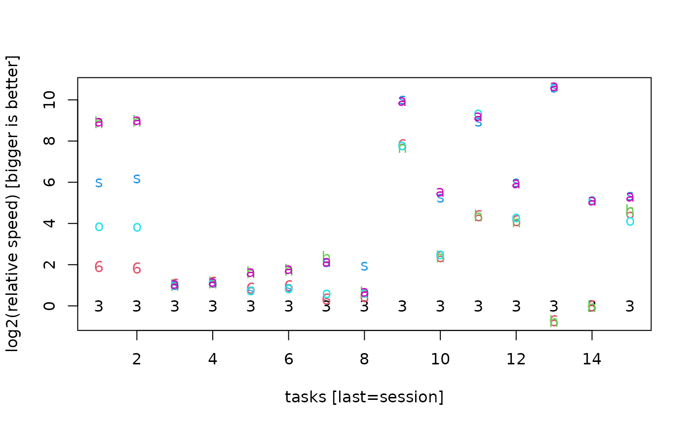
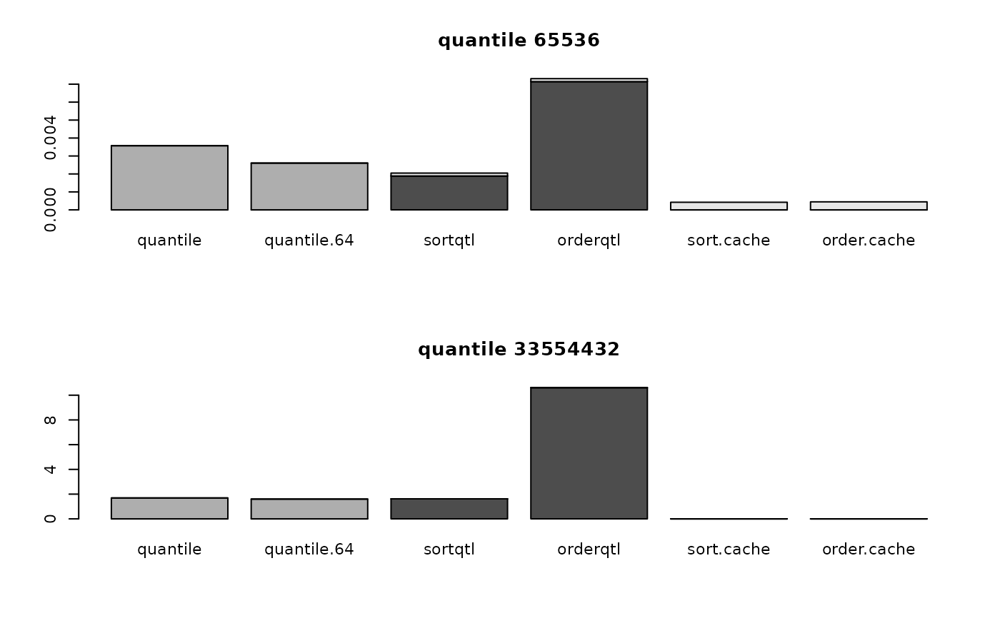
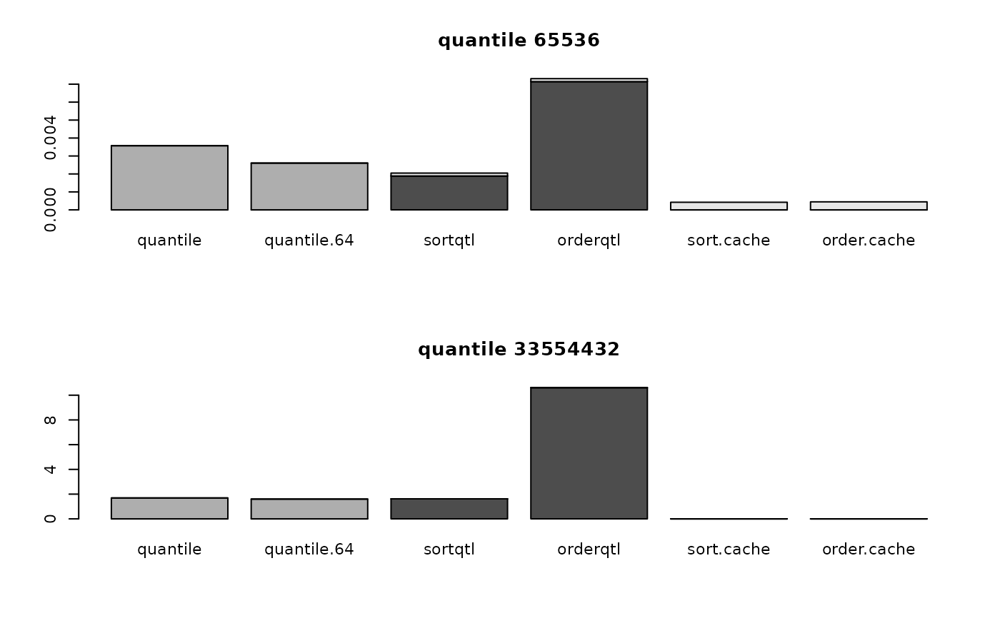

Function for measuring algorithmic performance of high-level and low-level integer64 functions
Source:R/highlevel64.R
benchmark64.RdFunction for measuring algorithmic performance of high-level and low-level integer64 functions
Usage
benchmark64(nsmall = 2L^16L, nbig = 2L^25L, timefun = repeat.time)
optimizer64(
nsmall = 2L^16L,
nbig = 2L^25L,
timefun = repeat.time,
what = c("match", "%in%", "duplicated", "unique", "unipos", "table", "rank",
"quantile"),
uniorder = c("original", "values", "any"),
taborder = c("values", "counts"),
plot = TRUE
)Arguments
- nsmall
size of smaller vector
- nbig
size of larger bigger vector
- timefun
a function for timing such as
bit::repeat.time()orsystem.time()- what
a vector of names of high-level functions
- uniorder
one of the order parameters that are allowed in
unique.integer64()andunipos.integer64()- taborder
one of the order parameters that are allowed in
table.integer64()- plot
set to FALSE to suppress plotting
Value
benchmark64 returns a matrix with elapsed seconds, different high-level tasks
in rows and different scenarios to solve the task in columns. The last row
named 'SESSION' contains the elapsed seconds of the exemplary sesssion.
optimizer64 returns a dimensioned list with one row for each high-level
function timed and two columns named after the values of the nsmall and
nbig sample sizes. Each list cell contains a matrix with timings,
low-level-methods in rows and three measurements c("prep","both","use")
in columns. If it can be measured separately, prep contains the timing
of preparatory work such as sorting and hashing, and use contains the
timing of using the prepared work. If the function timed does both,
preparation and use, the timing is in both.
Details
benchmark64 compares the following scenarios for the following use cases:
| scenario name | explanation |
| 32-bit | applying Base R function to 32-bit integer data |
| 64-bit | applying bit64 function to 64-bit integer data (with no cache) |
| hashcache | ditto when cache contains hashmap(), see hashcache() |
| sortordercache | ditto when cache contains sorting and ordering, see sortordercache() |
| ordercache | ditto when cache contains ordering only, see ordercache() |
| allcache | ditto when cache contains sorting, ordering and hashing |
| use case name | explanation |
| cache | filling the cache according to scenario |
| match(s,b) | match small in big vector |
| s %in% b | small %in% big vector |
| match(b,s) | match big in small vector |
| b %in% s | big %in% small vector |
| match(b,b) | match big in (different) big vector |
| b %in% b | big %in% (different) big vector |
| duplicated(b) | duplicated of big vector |
| unique(b) | unique of big vector |
| table(b) | table of big vector |
| sort(b) | sorting of big vector |
| order(b) | ordering of big vector |
| rank(b) | ranking of big vector |
| quantile(b) | quantiles of big vector |
| summary(b) | summary of of big vector |
| SESSION | exemplary session involving multiple calls (including cache filling costs) |
Note that the timings for the cached variants do not contain the time costs of building the cache, except for the timing of the exemplary user session, where the cache costs are included in order to evaluate amortization.
Functions
benchmark64(): compares high-level integer64 functions against the integer functions from Base Roptimizer64(): compares for each high-level integer64 function the Base R integer function with several low-level integer64 functions with and without caching
Examples
message("this small example using system.time does not give serious timings\n
this we do this only to run regression tests")
#> this small example using system.time does not give serious timings
#>
#> this we do this only to run regression tests
benchmark64(nsmall=2^7, nbig=2^13, timefun=function(expr)system.time(expr, gcFirst=FALSE))
#>
#> compare performance for a complete sessions of calls
#>
#> === 32-bit ===
#> check data range, mean etc.
#> get all percentiles for plotting distribution shape
#> list the upper and lower permille of values
#> OK, for some of these values I want to see the complete ROW, so I need their positions in the data.frame
#> check if any values are duplicated
#> since not unique, then check distribution of frequencies
#> OK, let's plot the percentiles of unique values versus the percentiles allowing for duplicates
#> check whether we find a match for each fact in the dimension table
#> check whether there are any dimension table entries not in the fact table
#> check whether we find a match for each fact in a parallel fact table
#> find positions of facts in dimension table for joining
#> find positions of facts in parallel fact table for joining
#> out of curiosity: how well rank-correlated are fact and parallel fact table?
#> 32-bit 64-bit hashcache sortordercache ordercache allcache
#> seconds 0.011 0 0 0 0 0
#> factor 1.000 Inf Inf Inf Inf Inf
#>
#> === 64-bit ===
#> check data range, mean etc.
#> get all percentiles for plotting distribution shape
#> list the upper and lower permille of values
#> OK, for some of these values I want to see the complete ROW, so I need their positions in the data.frame
#> check if any values are duplicated
#> since not unique, then check distribution of frequencies
#> OK, let's plot the percentiles of unique values versus the percentiles allowing for duplicates
#> check whether we find a match for each fact in the dimension table
#> check whether there are any dimension table entries not in the fact table
#> check whether we find a match for each fact in a parallel fact table
#> find positions of facts in dimension table for joining
#> find positions of facts in parallel fact table for joining
#> out of curiosity: how well rank-correlated are fact and parallel fact table?
#> 32-bit 64-bit hashcache sortordercache ordercache allcache
#> seconds 0.011 0.007 0 0 0 0
#> factor 1.000 1.571 Inf Inf Inf Inf
#>
#> === hashcache ===
#> check data range, mean etc.
#> get all percentiles for plotting distribution shape
#> list the upper and lower permille of values
#> OK, for some of these values I want to see the complete ROW, so I need their positions in the data.frame
#> check if any values are duplicated
#> since not unique, then check distribution of frequencies
#> OK, let's plot the percentiles of unique values versus the percentiles allowing for duplicates
#> check whether we find a match for each fact in the dimension table
#> check whether there are any dimension table entries not in the fact table
#> check whether we find a match for each fact in a parallel fact table
#> find positions of facts in dimension table for joining
#> find positions of facts in parallel fact table for joining
#> out of curiosity: how well rank-correlated are fact and parallel fact table?
#> 32-bit 64-bit hashcache sortordercache ordercache allcache
#> seconds 0.011 0.007 0.003 0 0 0
#> factor 1.000 1.571 3.667 Inf Inf Inf
#>
#> === sortordercache ===
#> check data range, mean etc.
#> get all percentiles for plotting distribution shape
#> list the upper and lower permille of values
#> OK, for some of these values I want to see the complete ROW, so I need their positions in the data.frame
#> check if any values are duplicated
#> since not unique, then check distribution of frequencies
#> OK, let's plot the percentiles of unique values versus the percentiles allowing for duplicates
#> check whether we find a match for each fact in the dimension table
#> check whether there are any dimension table entries not in the fact table
#> check whether we find a match for each fact in a parallel fact table
#> find positions of facts in dimension table for joining
#> find positions of facts in parallel fact table for joining
#> out of curiosity: how well rank-correlated are fact and parallel fact table?
#> 32-bit 64-bit hashcache sortordercache ordercache allcache
#> seconds 0.011 0.007 0.003 0.001 0 0
#> factor 1.000 1.571 3.667 11.000 Inf Inf
#>
#> === ordercache ===
#> check data range, mean etc.
#> get all percentiles for plotting distribution shape
#> list the upper and lower permille of values
#> OK, for some of these values I want to see the complete ROW, so I need their positions in the data.frame
#> check if any values are duplicated
#> since not unique, then check distribution of frequencies
#> OK, let's plot the percentiles of unique values versus the percentiles allowing for duplicates
#> check whether we find a match for each fact in the dimension table
#> check whether there are any dimension table entries not in the fact table
#> check whether we find a match for each fact in a parallel fact table
#> find positions of facts in dimension table for joining
#> find positions of facts in parallel fact table for joining
#> out of curiosity: how well rank-correlated are fact and parallel fact table?
#> 32-bit 64-bit hashcache sortordercache ordercache allcache
#> seconds 0.011 0.007 0.003 0.001 0.008 0
#> factor 1.000 1.571 3.667 11.000 1.375 Inf
#>
#> === allcache ===
#> check data range, mean etc.
#> get all percentiles for plotting distribution shape
#> list the upper and lower permille of values
#> OK, for some of these values I want to see the complete ROW, so I need their positions in the data.frame
#> check if any values are duplicated
#> since not unique, then check distribution of frequencies
#> OK, let's plot the percentiles of unique values versus the percentiles allowing for duplicates
#> check whether we find a match for each fact in the dimension table
#> check whether there are any dimension table entries not in the fact table
#> check whether we find a match for each fact in a parallel fact table
#> find positions of facts in dimension table for joining
#> find positions of facts in parallel fact table for joining
#> out of curiosity: how well rank-correlated are fact and parallel fact table?
#> 32-bit 64-bit hashcache sortordercache ordercache allcache
#> seconds 0.011 0.007 0.003 0.001 0.008 0.005
#> factor 1.000 1.571 3.667 11.000 1.375 2.200
#>
#> now let's look more systematically at the components involved
#> 32-bit match(s,b)
#> 32-bit s %in% b
#> 32-bit match(b,s)
#> 32-bit b %in% s
#> 32-bit match(b,b)
#> 32-bit b %in% b
#> 32-bit duplicated(b)
#> 32-bit unique(b)
#> 32-bit table(b)
#> 32-bit sort(b)
#> 32-bit order(b)
#> 32-bit rank(b)
#> 32-bit quantile(b)
#> 32-bit summary(b)
#> seconds 32-bit 64-bit hashcache sortordercache ordercache allcache
#> cache 0.000 0.000 0.000 0.000 0.000 0.000
#> match(s,b) 0.000 0.000 0.000 0.000 0.000 0.000
#> s %in% b 0.000 0.000 0.000 0.000 0.000 0.000
#> match(b,s) 0.001 0.000 0.000 0.000 0.000 0.000
#> b %in% s 0.000 0.000 0.000 0.000 0.000 0.000
#> match(b,b) 0.001 0.000 0.000 0.000 0.000 0.000
#> b %in% b 0.000 0.000 0.000 0.000 0.000 0.000
#> duplicated(b) 0.000 0.000 0.000 0.000 0.000 0.000
#> unique(b) 0.000 0.000 0.000 0.000 0.000 0.000
#> table(b) 0.003 0.000 0.000 0.000 0.000 0.000
#> sort(b) 0.000 0.000 0.000 0.000 0.000 0.000
#> order(b) 0.000 0.000 0.000 0.000 0.000 0.000
#> rank(b) 0.001 0.000 0.000 0.000 0.000 0.000
#> quantile(b) 0.000 0.000 0.000 0.000 0.000 0.000
#> summary(b) 0.000 0.000 0.000 0.000 0.000 0.000
#> SESSION 0.011 0.007 0.003 0.001 0.008 0.005
#> factor 32-bit 64-bit hashcache sortordercache ordercache allcache
#> cache NaN NaN NaN NaN NaN NaN
#> match(s,b) NaN NaN NaN NaN NaN NaN
#> s %in% b NaN NaN NaN NaN NaN NaN
#> match(b,s) 1 Inf Inf Inf Inf Inf
#> b %in% s NaN NaN NaN NaN NaN NaN
#> match(b,b) 1 Inf Inf Inf Inf Inf
#> b %in% b NaN NaN NaN NaN NaN NaN
#> duplicated(b) NaN NaN NaN NaN NaN NaN
#> unique(b) NaN NaN NaN NaN NaN NaN
#> table(b) 1 Inf Inf Inf Inf Inf
#> sort(b) NaN NaN NaN NaN NaN NaN
#> order(b) NaN NaN NaN NaN NaN NaN
#> rank(b) 1 Inf Inf Inf Inf Inf
#> quantile(b) NaN NaN NaN NaN NaN NaN
#> summary(b) NaN NaN NaN NaN NaN NaN
#> SESSION 1 1.571 3.667 11 1.375 2.2
#> 64-bit match(s,b)
#> 64-bit s %in% b
#> 64-bit match(b,s)
#> 64-bit b %in% s
#> 64-bit match(b,b)
#> 64-bit b %in% b
#> 64-bit duplicated(b)
#> 64-bit unique(b)
#> 64-bit table(b)
#> 64-bit sort(b)
#> 64-bit order(b)
#> 64-bit rank(b)
#> 64-bit quantile(b)
#> 64-bit summary(b)
#> seconds 32-bit 64-bit hashcache sortordercache ordercache allcache
#> cache 0.000 0.000 0.000 0.000 0.000 0.000
#> match(s,b) 0.000 0.000 0.000 0.000 0.000 0.000
#> s %in% b 0.000 0.000 0.000 0.000 0.000 0.000
#> match(b,s) 0.001 0.000 0.000 0.000 0.000 0.000
#> b %in% s 0.000 0.000 0.000 0.000 0.000 0.000
#> match(b,b) 0.001 0.001 0.000 0.000 0.000 0.000
#> b %in% b 0.000 0.000 0.000 0.000 0.000 0.000
#> duplicated(b) 0.000 0.000 0.000 0.000 0.000 0.000
#> unique(b) 0.000 0.000 0.000 0.000 0.000 0.000
#> table(b) 0.003 0.000 0.000 0.000 0.000 0.000
#> sort(b) 0.000 0.000 0.000 0.000 0.000 0.000
#> order(b) 0.000 0.000 0.000 0.000 0.000 0.000
#> rank(b) 0.001 0.001 0.000 0.000 0.000 0.000
#> quantile(b) 0.000 0.000 0.000 0.000 0.000 0.000
#> summary(b) 0.000 0.001 0.000 0.000 0.000 0.000
#> SESSION 0.011 0.007 0.003 0.001 0.008 0.005
#> factor 32-bit 64-bit hashcache sortordercache ordercache allcache
#> cache NaN NaN NaN NaN NaN NaN
#> match(s,b) NaN NaN NaN NaN NaN NaN
#> s %in% b NaN NaN NaN NaN NaN NaN
#> match(b,s) 1 Inf Inf Inf Inf Inf
#> b %in% s NaN NaN NaN NaN NaN NaN
#> match(b,b) 1 1.000 Inf Inf Inf Inf
#> b %in% b NaN NaN NaN NaN NaN NaN
#> duplicated(b) NaN NaN NaN NaN NaN NaN
#> unique(b) NaN NaN NaN NaN NaN NaN
#> table(b) 1 Inf Inf Inf Inf Inf
#> sort(b) NaN NaN NaN NaN NaN NaN
#> order(b) NaN NaN NaN NaN NaN NaN
#> rank(b) 1 1.000 Inf Inf Inf Inf
#> quantile(b) NaN NaN NaN NaN NaN NaN
#> summary(b) NaN 0.000 NaN NaN NaN NaN
#> SESSION 1 1.571 3.667 11 1.375 2.2
#> hashcache cache
#> hashcache match(s,b)
#> hashcache s %in% b
#> hashcache match(b,s)
#> hashcache b %in% s
#> hashcache match(b,b)
#> hashcache b %in% b
#> hashcache duplicated(b)
#> hashcache unique(b)
#> hashcache table(b)
#> hashcache sort(b)
#> hashcache order(b)
#> hashcache rank(b)
#> hashcache quantile(b)
#> hashcache summary(b)
#> seconds 32-bit 64-bit hashcache sortordercache ordercache allcache
#> cache 0.000 0.000 0.001 0.000 0.000 0.000
#> match(s,b) 0.000 0.000 0.000 0.000 0.000 0.000
#> s %in% b 0.000 0.000 0.000 0.000 0.000 0.000
#> match(b,s) 0.001 0.000 0.001 0.000 0.000 0.000
#> b %in% s 0.000 0.000 0.000 0.000 0.000 0.000
#> match(b,b) 0.001 0.001 0.000 0.000 0.000 0.000
#> b %in% b 0.000 0.000 0.000 0.000 0.000 0.000
#> duplicated(b) 0.000 0.000 0.000 0.000 0.000 0.000
#> unique(b) 0.000 0.000 0.000 0.000 0.000 0.000
#> table(b) 0.003 0.000 0.001 0.000 0.000 0.000
#> sort(b) 0.000 0.000 0.000 0.000 0.000 0.000
#> order(b) 0.000 0.000 0.001 0.000 0.000 0.000
#> rank(b) 0.001 0.001 0.000 0.000 0.000 0.000
#> quantile(b) 0.000 0.000 0.001 0.000 0.000 0.000
#> summary(b) 0.000 0.001 0.000 0.000 0.000 0.000
#> SESSION 0.011 0.007 0.003 0.001 0.008 0.005
#> factor 32-bit 64-bit hashcache sortordercache ordercache allcache
#> cache NaN NaN 0.000 NaN NaN NaN
#> match(s,b) NaN NaN NaN NaN NaN NaN
#> s %in% b NaN NaN NaN NaN NaN NaN
#> match(b,s) 1 Inf 1.000 Inf Inf Inf
#> b %in% s NaN NaN NaN NaN NaN NaN
#> match(b,b) 1 1.000 Inf Inf Inf Inf
#> b %in% b NaN NaN NaN NaN NaN NaN
#> duplicated(b) NaN NaN NaN NaN NaN NaN
#> unique(b) NaN NaN NaN NaN NaN NaN
#> table(b) 1 Inf 3.000 Inf Inf Inf
#> sort(b) NaN NaN NaN NaN NaN NaN
#> order(b) NaN NaN 0.000 NaN NaN NaN
#> rank(b) 1 1.000 Inf Inf Inf Inf
#> quantile(b) NaN NaN 0.000 NaN NaN NaN
#> summary(b) NaN 0.000 NaN NaN NaN NaN
#> SESSION 1 1.571 3.667 11 1.375 2.2
#> sortordercache cache
#> sortordercache match(s,b)
#> sortordercache s %in% b
#> sortordercache match(b,s)
#> sortordercache b %in% s
#> sortordercache match(b,b)
#> sortordercache b %in% b
#> sortordercache duplicated(b)
#> sortordercache unique(b)
#> sortordercache table(b)
#> sortordercache sort(b)
#> sortordercache order(b)
#> sortordercache rank(b)
#> sortordercache quantile(b)
#> sortordercache summary(b)
#> seconds 32-bit 64-bit hashcache sortordercache ordercache allcache
#> cache 0.000 0.000 0.001 0.000 0.000 0.000
#> match(s,b) 0.000 0.000 0.000 0.000 0.000 0.000
#> s %in% b 0.000 0.000 0.000 0.000 0.000 0.000
#> match(b,s) 0.001 0.000 0.001 0.001 0.000 0.000
#> b %in% s 0.000 0.000 0.000 0.000 0.000 0.000
#> match(b,b) 0.001 0.001 0.000 0.001 0.000 0.000
#> b %in% b 0.000 0.000 0.000 0.000 0.000 0.000
#> duplicated(b) 0.000 0.000 0.000 0.000 0.000 0.000
#> unique(b) 0.000 0.000 0.000 0.000 0.000 0.000
#> table(b) 0.003 0.000 0.001 0.000 0.000 0.000
#> sort(b) 0.000 0.000 0.000 0.000 0.000 0.000
#> order(b) 0.000 0.000 0.001 0.000 0.000 0.000
#> rank(b) 0.001 0.001 0.000 0.000 0.000 0.000
#> quantile(b) 0.000 0.000 0.001 0.000 0.000 0.000
#> summary(b) 0.000 0.001 0.000 0.000 0.000 0.000
#> SESSION 0.011 0.007 0.003 0.001 0.008 0.005
#> factor 32-bit 64-bit hashcache sortordercache ordercache allcache
#> cache NaN NaN 0.000 NaN NaN NaN
#> match(s,b) NaN NaN NaN NaN NaN NaN
#> s %in% b NaN NaN NaN NaN NaN NaN
#> match(b,s) 1 Inf 1.000 1 Inf Inf
#> b %in% s NaN NaN NaN NaN NaN NaN
#> match(b,b) 1 1.000 Inf 1 Inf Inf
#> b %in% b NaN NaN NaN NaN NaN NaN
#> duplicated(b) NaN NaN NaN NaN NaN NaN
#> unique(b) NaN NaN NaN NaN NaN NaN
#> table(b) 1 Inf 3.000 Inf Inf Inf
#> sort(b) NaN NaN NaN NaN NaN NaN
#> order(b) NaN NaN 0.000 NaN NaN NaN
#> rank(b) 1 1.000 Inf Inf Inf Inf
#> quantile(b) NaN NaN 0.000 NaN NaN NaN
#> summary(b) NaN 0.000 NaN NaN NaN NaN
#> SESSION 1 1.571 3.667 11 1.375 2.2
#> ordercache cache
#> ordercache match(s,b)
#> ordercache s %in% b
#> ordercache match(b,s)
#> ordercache b %in% s
#> ordercache match(b,b)
#> ordercache b %in% b
#> ordercache duplicated(b)
#> ordercache unique(b)
#> ordercache table(b)
#> ordercache sort(b)
#> ordercache order(b)
#> ordercache rank(b)
#> ordercache quantile(b)
#> ordercache summary(b)
#> seconds 32-bit 64-bit hashcache sortordercache ordercache allcache
#> cache 0.000 0.000 0.001 0.000 0.001 0.000
#> match(s,b) 0.000 0.000 0.000 0.000 0.000 0.000
#> s %in% b 0.000 0.000 0.000 0.000 0.000 0.000
#> match(b,s) 0.001 0.000 0.001 0.001 0.000 0.000
#> b %in% s 0.000 0.000 0.000 0.000 0.000 0.000
#> match(b,b) 0.001 0.001 0.000 0.001 0.001 0.000
#> b %in% b 0.000 0.000 0.000 0.000 0.000 0.000
#> duplicated(b) 0.000 0.000 0.000 0.000 0.001 0.000
#> unique(b) 0.000 0.000 0.000 0.000 0.000 0.000
#> table(b) 0.003 0.000 0.001 0.000 0.001 0.000
#> sort(b) 0.000 0.000 0.000 0.000 0.000 0.000
#> order(b) 0.000 0.000 0.001 0.000 0.000 0.000
#> rank(b) 0.001 0.001 0.000 0.000 0.000 0.000
#> quantile(b) 0.000 0.000 0.001 0.000 0.000 0.000
#> summary(b) 0.000 0.001 0.000 0.000 0.000 0.000
#> SESSION 0.011 0.007 0.003 0.001 0.008 0.005
#> factor 32-bit 64-bit hashcache sortordercache ordercache allcache
#> cache NaN NaN 0.000 NaN 0.000 NaN
#> match(s,b) NaN NaN NaN NaN NaN NaN
#> s %in% b NaN NaN NaN NaN NaN NaN
#> match(b,s) 1 Inf 1.000 1 Inf Inf
#> b %in% s NaN NaN NaN NaN NaN NaN
#> match(b,b) 1 1.000 Inf 1 1.000 Inf
#> b %in% b NaN NaN NaN NaN NaN NaN
#> duplicated(b) NaN NaN NaN NaN 0.000 NaN
#> unique(b) NaN NaN NaN NaN NaN NaN
#> table(b) 1 Inf 3.000 Inf 3.000 Inf
#> sort(b) NaN NaN NaN NaN NaN NaN
#> order(b) NaN NaN 0.000 NaN NaN NaN
#> rank(b) 1 1.000 Inf Inf Inf Inf
#> quantile(b) NaN NaN 0.000 NaN NaN NaN
#> summary(b) NaN 0.000 NaN NaN NaN NaN
#> SESSION 1 1.571 3.667 11 1.375 2.2
#> allcache cache
#> allcache match(s,b)
#> allcache s %in% b
#> allcache match(b,s)
#> allcache b %in% s
#> allcache match(b,b)
#> allcache b %in% b
#> allcache duplicated(b)
#> allcache unique(b)
#> allcache table(b)
#> allcache sort(b)
#> allcache order(b)
#> allcache rank(b)
#> allcache quantile(b)
#> allcache summary(b)
#> seconds 32-bit 64-bit hashcache sortordercache ordercache allcache
#> cache 0.000 0.000 0.001 0.000 0.001 0.000
#> match(s,b) 0.000 0.000 0.000 0.000 0.000 0.000
#> s %in% b 0.000 0.000 0.000 0.000 0.000 0.000
#> match(b,s) 0.001 0.000 0.001 0.001 0.000 0.000
#> b %in% s 0.000 0.000 0.000 0.000 0.000 0.000
#> match(b,b) 0.001 0.001 0.000 0.001 0.001 0.000
#> b %in% b 0.000 0.000 0.000 0.000 0.000 0.001
#> duplicated(b) 0.000 0.000 0.000 0.000 0.001 0.000
#> unique(b) 0.000 0.000 0.000 0.000 0.000 0.000
#> table(b) 0.003 0.000 0.001 0.000 0.001 0.001
#> sort(b) 0.000 0.000 0.000 0.000 0.000 0.000
#> order(b) 0.000 0.000 0.001 0.000 0.000 0.000
#> rank(b) 0.001 0.001 0.000 0.000 0.000 0.001
#> quantile(b) 0.000 0.000 0.001 0.000 0.000 0.000
#> summary(b) 0.000 0.001 0.000 0.000 0.000 0.000
#> SESSION 0.011 0.007 0.003 0.001 0.008 0.005
#> factor 32-bit 64-bit hashcache sortordercache ordercache allcache
#> cache NaN NaN 0.000 NaN 0.000 NaN
#> match(s,b) NaN NaN NaN NaN NaN NaN
#> s %in% b NaN NaN NaN NaN NaN NaN
#> match(b,s) 1 Inf 1.000 1 Inf Inf
#> b %in% s NaN NaN NaN NaN NaN NaN
#> match(b,b) 1 1.000 Inf 1 1.000 Inf
#> b %in% b NaN NaN NaN NaN NaN 0.0
#> duplicated(b) NaN NaN NaN NaN 0.000 NaN
#> unique(b) NaN NaN NaN NaN NaN NaN
#> table(b) 1 Inf 3.000 Inf 3.000 3.0
#> sort(b) NaN NaN NaN NaN NaN NaN
#> order(b) NaN NaN 0.000 NaN NaN NaN
#> rank(b) 1 1.000 Inf Inf Inf 1.0
#> quantile(b) NaN NaN 0.000 NaN NaN NaN
#> summary(b) NaN 0.000 NaN NaN NaN NaN
#> SESSION 1 1.571 3.667 11 1.375 2.2
#> 32-bit 64-bit hashcache sortordercache ordercache allcache
#> cache 0.000 0.000 0.001 0.000 0.001 0.000
#> match(s,b) 0.000 0.000 0.000 0.000 0.000 0.000
#> s %in% b 0.000 0.000 0.000 0.000 0.000 0.000
#> match(b,s) 0.001 0.000 0.001 0.001 0.000 0.000
#> b %in% s 0.000 0.000 0.000 0.000 0.000 0.000
#> match(b,b) 0.001 0.001 0.000 0.001 0.001 0.000
#> b %in% b 0.000 0.000 0.000 0.000 0.000 0.001
#> duplicated(b) 0.000 0.000 0.000 0.000 0.001 0.000
#> unique(b) 0.000 0.000 0.000 0.000 0.000 0.000
#> table(b) 0.003 0.000 0.001 0.000 0.001 0.001
#> sort(b) 0.000 0.000 0.000 0.000 0.000 0.000
#> order(b) 0.000 0.000 0.001 0.000 0.000 0.000
#> rank(b) 0.001 0.001 0.000 0.000 0.000 0.001
#> quantile(b) 0.000 0.000 0.001 0.000 0.000 0.000
#> summary(b) 0.000 0.001 0.000 0.000 0.000 0.000
#> SESSION 0.011 0.007 0.003 0.001 0.008 0.005
optimizer64(nsmall=2^7, nbig=2^13, timefun=function(expr)system.time(expr, gcFirst=FALSE)
, plot=FALSE
)
#> match: timings of different methods
#> %in%: timings of different methods
#> duplicated: timings of different methods
#> unique: timings of different methods
#> unipos: timings of different methods
#> table: timings of different methods
#> rank: timings of different methods
#> quantile: timings of different methods
#> 128 8192
#> match numeric,27 numeric,27
#> %in% numeric,30 numeric,30
#> duplicated numeric,30 numeric,30
#> unique numeric,45 numeric,45
#> unipos numeric,42 numeric,42
#> table numeric,39 numeric,39
#> rank numeric,21 numeric,21
#> quantile numeric,18 numeric,18
if (FALSE) { # \dontrun{
message("for real measurement of sufficiently large datasets run this on your machine")
benchmark64()
optimizer64()
} # }
message("let's look at the performance results on Core i7 Lenovo T410 with 8 GB RAM")
#> let's look at the performance results on Core i7 Lenovo T410 with 8 GB RAM
data(benchmark64.data)
print(benchmark64.data)
#> 32-bit 64-bit hashcache sortordercache
#> cache 2.546532e-05 1.522116e-05 3.340000000 4.900000e+00
#> match(s,b) 2.370000e+00 6.300000e-01 0.004950495 3.785714e-02
#> s %in% b 2.390000e+00 6.700000e-01 0.004761905 3.333333e-02
#> match(b,s) 1.280000e+00 6.200000e-01 0.630000000 6.400000e-01
#> b %in% s 1.390000e+00 6.300000e-01 0.630000000 6.400000e-01
#> match(b,b) 7.020000e+00 3.860000e+00 2.260000000 4.230000e+00
#> b %in% b 7.420000e+00 3.790000e+00 2.200000000 4.130000e+00
#> duplicated(b) 2.620000e+00 2.090000e+00 0.500000000 6.100000e-01
#> unique(b) 2.860000e+00 2.090000e+00 1.830000000 7.500000e-01
#> table(b) 5.105700e+02 2.260000e+00 2.430000000 5.000000e-01
#> sort(b) 8.420000e+00 1.610000e+00 1.590000000 2.233333e-01
#> order(b) 5.349000e+01 2.590000e+00 2.540000000 1.120000e-01
#> rank(b) 5.614000e+01 3.200000e+00 3.280000000 9.000000e-01
#> quantile(b) 9.600000e-01 1.590000e+00 1.600000000 6.318348e-04
#> summary(b) 1.640000e+00 1.640000e+00 1.670000000 4.727273e-02
#> SESSION 8.499700e+02 3.680002e+01 33.954807692 2.131084e+01
#> ordercache allcache
#> cache 23.620000000 8.590000e+00
#> match(s,b) 0.166666667 4.950495e-03
#> s %in% b 0.170000000 4.761905e-03
#> match(b,s) 0.620000000 6.200000e-01
#> b %in% s 0.630000000 6.300000e-01
#> match(b,b) 4.260000000 2.280000e+00
#> b %in% b 4.180000000 2.210000e+00
#> duplicated(b) 1.760000000 6.000000e-01
#> unique(b) 1.890000000 1.820000e+00
#> table(b) 2.360000000 5.300000e-01
#> sort(b) 1.510000000 1.833333e-01
#> order(b) 0.083333333 9.333333e-02
#> rank(b) 2.910000000 9.200000e-01
#> quantile(b) 0.000618047 6.082725e-04
#> summary(b) 0.047272727 4.818182e-02
#> SESSION 49.277285479 2.187034e+01
matplot(log2(benchmark64.data[-1,1]/benchmark64.data[-1,])
, pch=c("3", "6", "h", "s", "o", "a")
, xlab="tasks [last=session]"
, ylab="log2(relative speed) [bigger is better]"
)

matplot(t(log2(benchmark64.data[-1,1]/benchmark64.data[-1,]))
, type="b", axes=FALSE
, lwd=c(rep(1, 14), 3)
, xlab="context"
, ylab="log2(relative speed) [bigger is better]"
)
axis(1
, labels=c("32-bit", "64-bit", "hash", "sortorder", "order", "hash+sortorder")
, at=1:6
)
axis(2)
 data(optimizer64.data)
print(optimizer64.data)
#> 65536 33554432
#> match numeric,27 numeric,27
#> %in% numeric,30 numeric,30
#> duplicated numeric,30 numeric,30
#> unique numeric,45 numeric,45
#> unipos numeric,42 numeric,42
#> table numeric,39 numeric,39
#> rank numeric,21 numeric,21
#> quantile numeric,18 numeric,18
oldpar <- par(no.readonly = TRUE)
par(mfrow=c(2,1))
par(cex=0.7)
for (i in 1:nrow(optimizer64.data)){
for (j in 1:2){
tim <- optimizer64.data[[i,j]]
barplot(t(tim))
if (rownames(optimizer64.data)[i]=="match")
title(paste("match", colnames(optimizer64.data)[j], "in", colnames(optimizer64.data)[3-j]))
else if (rownames(optimizer64.data)[i]=="%in%")
title(paste(colnames(optimizer64.data)[j], "%in%", colnames(optimizer64.data)[3-j]))
else
title(paste(rownames(optimizer64.data)[i], colnames(optimizer64.data)[j]))
}
}
data(optimizer64.data)
print(optimizer64.data)
#> 65536 33554432
#> match numeric,27 numeric,27
#> %in% numeric,30 numeric,30
#> duplicated numeric,30 numeric,30
#> unique numeric,45 numeric,45
#> unipos numeric,42 numeric,42
#> table numeric,39 numeric,39
#> rank numeric,21 numeric,21
#> quantile numeric,18 numeric,18
oldpar <- par(no.readonly = TRUE)
par(mfrow=c(2,1))
par(cex=0.7)
for (i in 1:nrow(optimizer64.data)){
for (j in 1:2){
tim <- optimizer64.data[[i,j]]
barplot(t(tim))
if (rownames(optimizer64.data)[i]=="match")
title(paste("match", colnames(optimizer64.data)[j], "in", colnames(optimizer64.data)[3-j]))
else if (rownames(optimizer64.data)[i]=="%in%")
title(paste(colnames(optimizer64.data)[j], "%in%", colnames(optimizer64.data)[3-j]))
else
title(paste(rownames(optimizer64.data)[i], colnames(optimizer64.data)[j]))
}
}


 
par(mfrow=c(1,1))

par(mfrow=c(1,1))